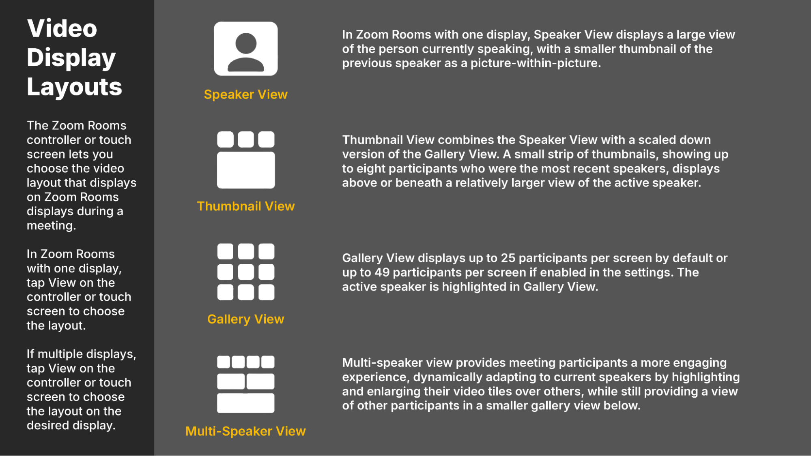

*Meeting rooms must be added to the scheduled calendar event for them to appear on the Zoom Room’s controller.
Share your screen easily by following these steps:
If you have your laptop or mobile device with you, you can easily share content in a Zoom Room via share.zoom.us. You may share content without needing to start or join a meeting.

The Zoom Rooms controller or touch screen lets you choose the video layout that displays on Zoom Rooms displays during a meeting. In Zoom Rooms with one display, tap View on the controller or touch screen to choose the layout.
In Zoom Rooms with more than one display, users can choose which screen layout or content is shown on each connected display via the Zoom Rooms controller. Tap View on the controller or touch screen and select a display to choose each layout.
In a project kickoff meeting with stakeholders and team members, here’s how each layout may be beneficial:
In Zoom Rooms with one display, Speaker View displays a large view of the person currently speaking, with a smaller thumbnail of the previous speaker as a picture-within-picture. During screen sharing, the shared screen is in the large display and the thumbnail shows the person who is currently speaking. This view includes Layout Options, where you can choose the size and location of the thumbnail, choose to display the current speaker or shared screen without a thumbnail, and swap the content and current speaker.
In Zoom Rooms with more than one display, users can choose which screen layout or content is shown on each connected display via the Zoom Rooms controller. On the chosen display, Speaker View displays a full screen view of the person currently speaking on the chosen display.
Thumbnail View combines the Speaker View with a scaled down version of the Gallery View. A small strip of thumbnails, showing up to eight participants who were the most recent speakers, displays above or beneath a relatively larger view of the active speaker. The position of the thumbnails is controlled by the default display layout configuration and cannot be altered from the Zoom Rooms controller or touch screen interface. A Zoom Rooms administrator can customize the default display layout, including thumbnail position.
This view includes Layout Options where you can paginate between participants if there are more than eight, and choose how they are sorted.
When screen sharing in Zoom Rooms with one display, the shared screen is displayed in the large view and the thumbnails will show up to eight participants, including the active speaker, and those who were most recently speakers.
In Zoom Rooms with more than one display, users can choose which screen layout or content is shown on each connected display via the Zoom Rooms controller. When screen sharing on a chosen, the shared screen is displayed in the large view and the thumbnails will show up to eight participants, including the current speaker, and those who were most recently speakers.
Gallery View displays up to 25 participants per screen. The active speaker is highlighted in Gallery View. If there are more participants than the per-screen limit, an arrow displays next to the icon. Tap the right arrow to display the next group of participants on the screen, and tap the left arrow to display the previous set.
This view includes Layout Options where you can choose how participants are sorted. Gallery View is not available in a Zoom Room with one screen while screen sharing.
Multi-speaker view provides meeting participants a more engaging experience, dynamically adapting to current speakers by highlighting and enlarging their video tiles over others, while still providing a view of other participants in a smaller gallery view below. With 4 or fewer participants, gallery view is used instead, but with sufficient participants, up to 4 active speaker(s) will have their video tile enlarged and made the focus of the meeting. Pinning videos is supported with multi-speaker layout, keeping the pinned video in focus, but spotlighting is not supported, as the spotlighted video tile will take control of the video layout for all.
Neat Device Camera Modes are specialized settings designed to enhance video conferencing experiences by optimizing how participants are displayed.
In a hybrid team strategy session where both in-person and remote participants collaborate, here’s how each camera mode may be beneficial:
When Speaker Focus is enabled, the camera will automatically switch focus between meeting room participants when they speak. When two participants are actively speaking at the same time, the stream may momentarily show them in the same view before keeping individual focus on the last speaking participant.
When this option is chosen, the camera will automatically focus on the meeting room participants and group them together. If participants move around or leave/enter the meeting room, the framing will be adjusted to accommodate those changes (see Figures 1 and 2).
When Multi-focus framing is enabled, Neat devices can frame each participant and place them side-by-side, as seen in Figure 3. Compared to the image in Figure 2, the table is no longer taking up a large amount of space on the foreground and instead, a closer, equally-sized view of the participants is achieved.
The Multi-Stream feature brings about a set of new changes in how we view and frame participants in the meeting room.
If you are using a room with a Neat Bar Pro, the active speaker in a room can always be highlighted while using Multi-Stream in Zoom. In “Gallery View” there will be a green rectangle around the frame that displays the camera stream that contains the active speaker. In Speaker View and Thumbnail View the camera stream that contains the active speaker will be shown instead of always showing the overview camera.
Note: Only the overview camera is transmitted as 720p/1080p. The additional streams are transmitted as 360p, thus the Speaker and Thumbnail View may show lower resolution than expected. (Zoom and Neat are working to address this in a future release.)
If there are two or more participants in the meeting room, the Multi-Stream feature provides a brand new experience for the remote participants in the meeting room. The meeting room is split over three separate streams: the first stream providing a full-view of the meeting room; the second and third streams providing individually framed views of the participants in the meeting room (e.g. with 2 people, 1 in each frame; with 4 people, 2 in each frame and so on).
Figure 5 and 6 provide examples of how this is viewed by others in Gallery mode.
In Figure 5, the Multi-Stream feature is enabled in the room called ‘Sunrise’ and there are three participants in the meeting room. In the Gallery view, the Neat device (Sunrise) sends three streams to Zoom:
In Figure 6, there are 6 participants in the meeting room. Similar to Figure 5, there are three streams sent from Neat to Zoom: a) first stream shows full view of the meeting room; b) second stream shows multi-focus/individually-framed view of three participants and c) third stream shows multi-focus/individually-framed participants of the remaining three participants.
IMPORTANT: This is only a limitation for the current iteration of the Multi-Stream feature. Zoom and Neat plan to improve this experience in future releases. If your meetings are usually viewed in Active Speaker mode (as opposed to Gallery mode), the ‘Multi-focus framing’ will provide a better experience over Multi-Stream.
In Figure 7, the meeting room has 5 participants and Multi-Stream mode is chosen. As you can observe, when the viewer chooses ‘Speaker’ mode, the full room-view is shown as the Active Speaker, rather than the close-up individually-framed view.
Figure 7: Multi-Stream with 5 participants, viewed in Speaker mode (full room-view is shown as loudest speaker)
Zoom AI Features are advanced tools designed to enhance productivity during meetings. These features streamline the meeting process, making it easier to capture and share critical information efficiently.
During a Quarterly Business Review (QBR) with executives and team leaders, here’s how Zoom’s AI Companion may be beneficial:
The Zoom Meeting Summary feature allows users to generate AI-powered summaries of their meetings. These summaries are accessible via the Zoom desktop or mobile app and can be shared automatically with participants through Zoom Team Chat or email.
If the host enables sharing, meeting participants can access the summary through email and Zoom Team Chat. Anyone who receives the meeting summary may save and share it with apps and others. The account owner can access the meeting summary.
Once a meeting summary is available, a copy of it is provided through email. Summaries for meetings that have continuous meeting chat disabled are only shared through email.
The meeting summary is only available through Zoom Team Chat if the meeting was scheduled with continuous meeting chat enabled.
Enable Meeting Questions with the AI Companion to allow participants to get real-time answers during Zoom meetings when joining from the Zoom Desktop app on their laptops. The AI Companion can clarify points, provide additional information, or summarize content discussed. This feature enhances engagement by enabling participants to interact with the AI without disrupting the flow of the meeting, ensuring that everyone stays informed and aligned.
*Meeting hosts in Zoom Rooms can only start or stop AI Companion, enabling participants to ask questions when joining from the Zoom Desktop app on their laptops.
When the meeting starts, the host will need to manually start AI Companion so that it is available to in-meeting participants.
Use the following methods to reach out to support if you are having trouble in a meeting room.